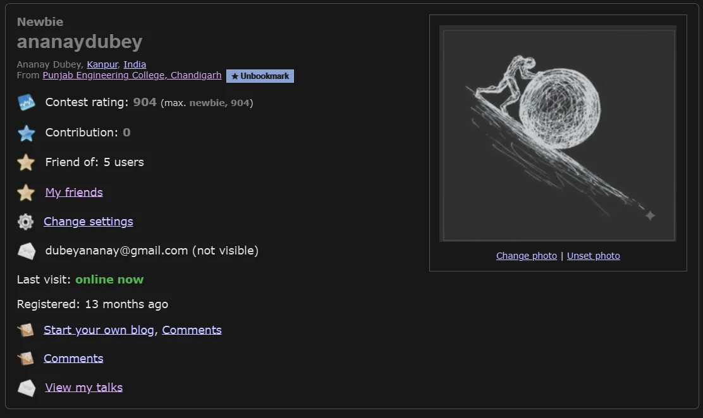

Documentation
Technical specifications, configuration details, and architecture guidelines for the L'Amigo multi-platform competitive programming tracker.
- Installation: Obtain the compiled extension package from the Chrome Web Store. Once loaded, the extension runs background listeners using Chrome's service worker context.
- Onboarding: Provide your personal handles during first-time startup. This initializes your personal baseline data storage under the keys
own_username(LeetCode),own_codeforces_handle, andown_codechef_handle. - Peer Setup: Add peer handles in the "Add Friend" overlay. Profiles can link handles for multiple platforms under a single unified identity.
- Authentication: Configure the optional GitHub Sync utilizing either the standard OAuth authorization grant flow or by manually generating a personal access token.
Power User Keyboard Shortcuts
Technical specification of global key bindings listener for the popup UI window.
L'Amigo features built-in global keybinds registered in the dashboard popup. These hotkeys facilitate instant tab switching, manual data synchronization, and list navigation. The listeners capture keydown events directly inside the React UI tree context when the popup is active:
| Hotkey | Triggered Action Description |
|---|---|
| r | Initiates an immediate force refresh of all tracked peers, bypassing default caching mechanisms and calling platform APIs. |
| j | Navigates/scrolls focus downward in the friends list. |
| k | Navigates/scrolls focus upward in the friends list. |
| 1 | Switches popup window tab view to the Friends & Dashboard tab. |
| 2 | Switches popup window tab view to the Compare Analysis tab. |
| 3 | Switches popup window tab view to the Configuration & Settings tab. |
| Esc | Instantly dismisses any open modals (such as settings import/export, profile edit windows, or comparison screens). |
1. Dashboard & Multi-Platform Friends
Technical implementation of unified profile cards and cron-like activity aggregation across multiple systems.

Platform Account Unified Identities
L'Amigo unifies data schemas across distinct platforms into a single cohesive client entity model. Each added friend is represented in storage as a FriendIdentity schema object. Accounts associated with this identity transit through status states of pending, active, and invalid based on API verification.
The dashboard renders these unified accounts dynamically. Solved counts from LeetCode are categorized by difficulty and accepted status. Codeforces accounts retrieve the user's latest rating and division ranking. CodeChef accounts resolve active star tiers and rating levels. This provides a single panel showing multi-platform stats without manual context switching.
Daily Solve Goal Tracking
L'Amigo tracks daily target progress by evaluating users' solved problem counts for the current day against their configured daily_goal value in local storage. This runs synchronizations and keeps progress metrics updated continuously.
Live Chronological Activity Feed

Stay updated with the Recent Activity Feed. The feed gathers raw user submission logs from both LeetCode and Codeforces API endpoints. Submissions are filtered to include only accepted verdicts (e.g. Accepted on LeetCode and OK on Codeforces), combined into a single feed collection, sorted descending by epoch timestamps, and rendered with relative time indicators. To protect client memory and local storage structures, the feed aggregates and displays up to a maximum limit of 50 total records.
2. Deep Analytics & Head-to-Head Comparison
Enterprise-grade comparative metrics and custom data visualization modules built to evaluate algorithmic strengths and solve velocities.
Algorithmic Topic Radar Charts
By extracting problem tags from users' lists of solved questions, the radar charts map problem-solving distribution across major CS domains (e.g. dynamic programming, graphs, greedy algorithms, trees, and math). The chart compares multi-point polygon surfaces for the user and their peers, highlighting which coder dominates specific algorithmic fields.
Overlapped Heatmap Matrices
The overlapped submission heatmap merges daily calendar submission counts for up to 5 users on a single matrix calendar. Squares are color-coded based on density, allowing teams to determine consistency and find periods of synchronized development activity.
Contest Rating Trajectories
Tracked Metric Indexes
- Historical Progression: Compares contest rating history over time for LeetCode (weekly/biweekly contests) and Codeforces round results.
- Solved Velocity: Measures the rate of solves (quantity divided by days) over the previous 30-day window, indicating current algorithmic momentum.
- Accuracy Profiles: Evaluates acceptance rates, comparing total submissions against accepted codes to determine debugging efficiency.
Granular Head-to-Head Breakdowns
For numerical analysis, users can access side-by-side matrices detailing exact counts of problems solved per topic, current/best streak counts, and platform-wide rankings. Winning metrics are calculated dynamically and highlighted automatically.
3. Smart Tools & Recommendations
Peer-driven recommendation pipelines and contest trackers to sync competitive schedules.

Recommendation Engine Mechanics
The problem recommendation system processes lists of solved problems from added friends. It aggregates these solve records, identifies problems solved by your peers that you have not yet attempted, filters them by difficulty preferences, and orders them by popularity (frequency of solve across your friend list). This allows coders to tackle high-yield questions studied by their peers.
Contest Schedule Aggregation
The contest schedule panel polls the official LeetCode GraphQL API, the Codeforces API, and CodeChef feeds. It parses dates, normalizes duration parameters, filters out ended contests, and sorts upcoming competitive events. It includes a count-down timer to ensure coders never miss live contest windows.
4. Native Codeforces & LeetCode Integration
Technical architecture of content script injection routines, in-page widgets, and live rating calculations.

Live Standings delta Predictor
When loading a Codeforces standings page, the content script intercepts standings rows and queries live contest parameters. It runs a Carrot-style rating prediction algorithm directly in the client context. It computes seed parameters, calculates expected rank values based on participant performance, and maps expected rating deltas in real-time. This provides coders with live delta calculations in a new Δ Pred column during rounds.
Standings Filtering
The extension injects custom standby filters such as College Standings. This maps competitor handles against registered college/organization affiliations from user profiles, filtering out unassociated participants to generate custom local rankings.
Codeforces Standings Page Delta Upgrades
L'Amigo elevates the Codeforces standings page with two major in-page updates:
- User Own-Row Delta Badge: Next to the user's handle in the standings table, L'Amigo injects a loading badge (
⏳ Δ…) that retrieves official changes (if the contest is rated) or performs a local Elo rating prediction based on top 3000 participant seeds, displaying real-time predictions directly. - Native Standings Delta Column (Δ Pred Column): A new column header is appended to the default standings table, and each participant row receives a prediction cell. This computes expected updates for up to 3000 contestants simultaneously.
- Automatic Standings Pre-fetching: A background process automatically triggers standings queries on initial load, warming the local cache to deliver predictions faster when navigating standings pages.
Codeforces DOM Profile Customizations
The content script modifies Codeforces profiles and lists dynamically:
- Quick-Add User Handles (
+Button): Installs small, interactive+buttons next to user handles across rankings, standings, and comments pages. Clicking this button transmits a background message (createIdentity) to sync their credentials without opening the extension popup. - Profile Organization Bookmarking: Places a small
☆ Bookmarkbutton adjacent to the organization links on user profiles. Clicking this scrapes members from the organization rankings pages and caches them locally for college standings. - Custom Dark Theme Style Override: If enabled, the extension injects custom stylesheet configurations (
codeforces.css) directly into the page head to transform Codeforces into a fully functional dark mode.
Rating-Based Profile Heatmap Recoloring
Under the Codeforces profile page, L'Amigo injects a toggle checkbox (Rating-based Heatmap) at the user activity header. When activated, it retrieves user submission history from the Codeforces status endpoint, computes the maximum rating of solved problems for each calendar date, and overrides the SVG fill colors of the activity graph rectangles to correspond to the official Codeforces rating tier colors (ranging from green/cyan/blue up to master orange and red). A detailed color scale legend is also injected below the activity graph.


LeetCode Profile Injection Hooks
The content script listens for DOM mutations on LeetCode user profile pages. Upon finding sidebar sections, it injects native Track with L'Amigo and Compare with Me buttons. Clicking these buttons communicates with the background service worker via Chrome runtime messaging, allowing users to add or compare profiles directly without leaving LeetCode.
LeetCode Problem Page Integrations
L'Amigo modifies LeetCode problem solving pages to display both peer and progress statistics:
- "Solved by Friends" Avatar Badge: Under the main question title, L'Amigo injects an avatar panel showing the profiles of up to 3 friends who have successfully solved the current problem, accompanied by time-ago indicators (e.g.
Solved by User1, User2 (2h ago)). - Daily Goal Progress Bar: A thin progress tracker element is injected directly into the document body to display the user's progress toward their daily goal (solves today vs daily target).
- Inline GitHub Sync Badge: Upon solving a problem and receiving an "Accepted" verdict, a sync indicator badge containing a direct link to the user's synchronized GitHub repository is rendered beside the verdict box.
- Floating Sync Success Toasts: If a sync operation completes in the background, a floating success alert toast notifies the user in real-time.
5. Individual Profile Deep-Dives
Detailed metrics analysis, performance charts, topic mastery radars, and problem-level submission pagination lists compiled from user profiles.
Dynamic Profile Hero & Identity
The individual profile deep-dive view is initialized when selecting a friend from the popup dashboard. The header layout contains several peer identification metrics:
- Platform-based Radial Gradient: The hero background uses a dynamic radial gradient colored according to the user's active platform ranking (e.g., gold for Knight/Guardian on LeetCode, or color-themed by Codeforces ranks).
- Active Solve Streak (🔥 Badge): Integrates with the local
StreakCalculatorto determine consecutive daily solves across linked platforms, rendering a flame badge next to the display name. - Contest and Rating Tags: Displays total contest count and max platform-specific ratings directly in the header banner.
Platform Selector Tab Segment
If a peer profile connects multiple platform handles (LeetCode, Codeforces, and CodeChef), the interface renders a sliding segment tab control. Switching tabs updates the theme colors, active stats grids, charts, and submission streams instantly.
Platform-Specific Metrics & Division Bars
Each platform view displays detailed numeric performance cards:
- Contest Rating & Rank Badges: Displays active ratings alongside official rank tiers (e.g. Knight, Guardian, Candidate Master, or Stars rating).
- Solved Category Grid (Filter Shortcuts): Divides solved counts into Total, Easy, Medium, and Hard pills. Clicking on any difficulty pill acts as a filter shortcut that navigates the user to the Submissions tab and filters problem items by that selection.
- Codeforces Division Play Breakdown: In Codeforces view, the profile renders a segmented progress bar illustrating the ratio of contests played in Div 1, Div 2, Div 3, and Div 4 (color-coded as red, yellow, blue, and green, respectively) with exact round counts.
Overview & Contests Dashboard
The Overview pane leverages Recharts to provide deep analytics:
- Contest Rating AreaChart: An interactive chart mapping rating progress over previous contest rounds, using customized gradient area fills and a custom hover tooltip displaying contest details.
- Topic Mastery RadarChart: A radar diagram evaluating solved counts across the top 6 computer science tags (e.g. Dynamic Programming, Greedy, Trees, Graphs, Math) to visualize algorithmic profiles.
- Peak Performance Stats: Displays maximum rating, best global rank, and overall submission acceptance accuracy rate.
- Verdict Distribution Cards: Aggregates the last 2000 submissions and breaks down verdicts into Accepted (AC), Wrong Answer (WA), Time Limit Exceeded (TLE), and Runtime Error (RE) count cards.
- Recent Contests Table: Tabulates the 5 most recent contests with official ranking tags, ratings, and color-coded rating deltas (green for rating gains, red for losses).
Questions Solved & Submissions Feed
The Submissions pane lists detailed problem-solving history:
- Interactive Filter Buttons: Filters submission items by All, Easy, Medium, or Hard difficulty.
- Double Action Links: Each submission card provides a link to the problem page (
Qbutton) and a direct link to the user's specific submission source code (Abutton). - Paginating Load More: The page loads 30 items initially and provides a dashed "Load More" button to retrieve additional submissions in increments of +30.
6. Settings, Backup, and GitHub Sync
Failsafe backup strategies, secure authentication, and solution synchronization architecture across directories.


GitHub Sync Architecture
The sync engine parses accepted solutions and syncs them directly to a specified GitHub repository. To optimize API performance and prevent rate-limiting, the engine tracks already-synced solutions locally.
OAuth tokens or personal access tokens (PATs) are stored locally using Chrome's encrypted storage API. Tokens are passed in headers directly to the official GitHub API and are never transmitted to external servers.
Solutions are committed and organized using a standardized directory hierarchy:
Flexible GitHub Authentication Engines
L'Amigo supports multiple modes for linking and authorizing repositories:
- Personal Access Tokens (PAT): Directly save generated tokens with the
reposcope locally. - OAuth Device Flow: The authorization engine connects to
https://github.com/login/device/codeto retrieve a user code, polls the token exchange endpoint, and establishes authentication without entering passwords.
Detailed Sync Event History Logs
Users can view their sync diagnostics directly under settings. The background worker records the last 10 synchronization events in the local sync_history key. These records store timestamps, quantities, problem names, sync states, and detailed error messages to troubleshoot API failures.
Debounced Storage Config Auto-Backups
To protect lists of friends and handles across reinstalls, any updates in local configuration parameters trigger a **5-second debounced background backup process**. The configuration details are gathered and committed as a .lamigo-backup.json file at the root of the synced repository. A Restore button inside the onboarding modal parses this file to reconstruct local storage instantly.
Deduplication and Automatic README Generation
The sync engine runs in an incremental mode, comparing submission IDs against the synced_submissions set. In addition to solution files, the engine generates repository enhancements automatically:
- leetcode-stats.svg: A custom vector badge containing total solved counters, dynamically updated with each sync.
- README.md: A structured repository index containing a progress dashboard, solved ratios with progress bars, and a clean tabular index mapping problem numbers, platforms, languages, and local solution links.
Development WebSocket Auto-Reload
For contributors running development builds, a WebSocket listener connects to ws://localhost:9091 in the background script, responding to hot-reloads dynamically.